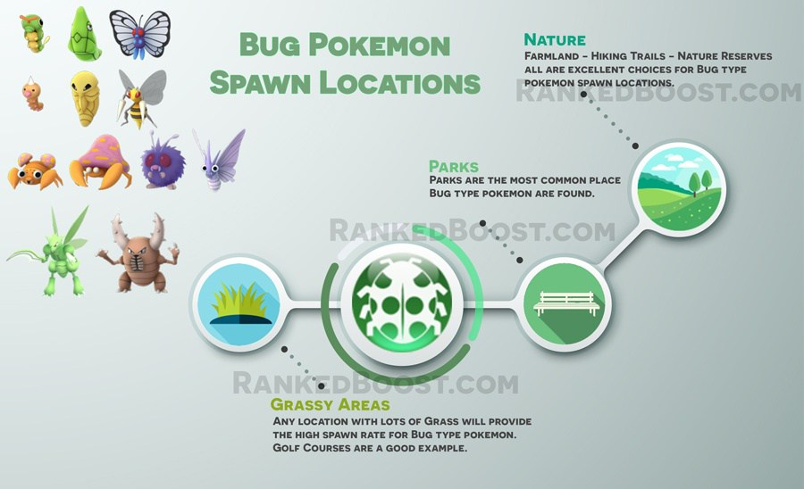

Where Do I Catch Bug Pokemon In Pokemon Go: Bug pokemon have similar spawn locations to grass pokemon. Locations such as Farmland, Woods and even nature reserves.
How To Get Bug Type Pokemon Tips:
Where Do I Find Bug Pokemon? – ( Bug Pokemon Locations )
Confirmed Bug Pokemon Go Spawn Locations: Parks – Farmland – Forest – Gardens – Golf Courses – Woodland – Grassy Areas – Meadow – Nature Reserve
Unconfirmed Bug Pokemon Go Spawn Locations:
There is a Total of 12 Pokemon Go Bug Pokemon: Caterpie, Metapod, Butterfree, Weedle, Kakuna, Beedrill, Paras, Parasect, Venonat, Venomoth, Scyther and Pinsir.
